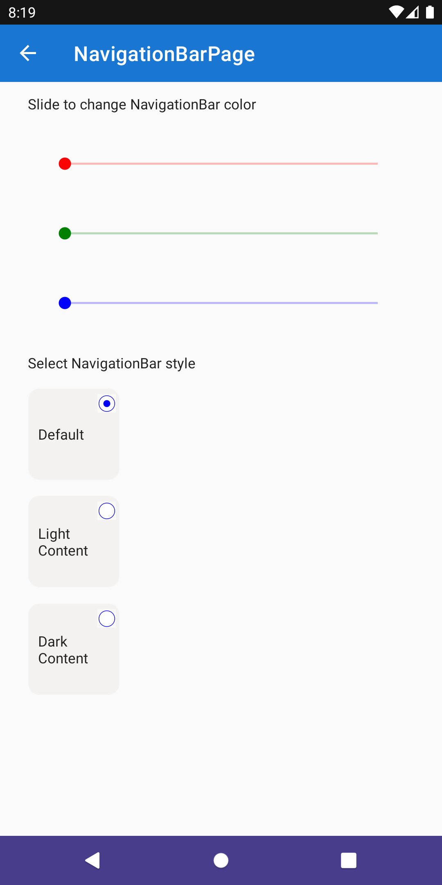

Android NavigationBar
The NavigationBar provides the ability to customize the appearance of the Navigation Bar on the Android platform.
The feature provides the ability to set:
Bar Color
The Color property makes it possible to provide any Color to use in setting the background color of the navigation bar.
Bar Style
The Style property makes it possible to customize the foreground color of the navigation with the following allowed values:
Default- this is the default and will make use of the system theme settings.LightContent- the foreground will apply the light theme color.DarkContent- the foreground will apply the dark theme color.
Syntax
The following examples show how to use the NavigationBar to set the background color to DarkSlateBlue and the foreground style to LightContent.

XAML
Including the XAML namespace
Note
This is a different namespace to the standard toolkit namespace due to the platform specific nature of the feature and its usage.
In order to use this feature in XAML the following xmlns needs to be added into your page or view:
xmlns:droid="clr-namespace:CommunityToolkit.Maui.PlatformConfiguration.AndroidSpecific;assembly=CommunityToolkit.Maui"
Therefore the following:
<ContentPage
x:Class="CommunityToolkit.Maui.Sample.Pages.NavigationBarPage"
xmlns="http://schemas.microsoft.com/dotnet/2021/maui"
xmlns:x="http://schemas.microsoft.com/winfx/2009/xaml">
</ContentPage>
Would be modified to include the xmlns as follows:
<ContentPage
x:Class="CommunityToolkit.Maui.Sample.Pages.NavigationBarPage"
xmlns="http://schemas.microsoft.com/dotnet/2021/maui"
xmlns:x="http://schemas.microsoft.com/winfx/2009/xaml"
xmlns:droid="clr-namespace:CommunityToolkit.Maui.PlatformConfiguration.AndroidSpecific;assembly=CommunityToolkit.Maui">
</ContentPage>
Using the NavigationBar
The NavigationBar can be used as follows in XAML:
<ContentPage
xmlns="http://schemas.microsoft.com/dotnet/2021/maui"
xmlns:x="http://schemas.microsoft.com/winfx/2009/xaml"
xmlns:droid="clr-namespace:CommunityToolkit.Maui.PlatformConfiguration.AndroidSpecific;assembly=CommunityToolkit.Maui"
x:Class="CommunityToolkit.Maui.Sample.Pages.NavigationBarPage"
droid:NavigationBar.Color="DarkSlateBlue"
droid:NavigationBar.Style="LightContent">
</ContentPage>
C#
The NavigationBar can be used as follows in C#:
using CommunityToolkit.Maui.PlatformConfiguration.AndroidSpecific;
class NavigationBarPage : ContentPage
{
public NavigationBarPage()
{
this.On<Android>().SetColor(Colors.Purple);
this.On<Android>().SetStyle(NavigationBarStyle.DarkContent);
}
}
Examples
You can find an example of this feature in action in the .NET MAUI Community Toolkit Sample Application.
API
You can find the source code for NavigationBar over on the .NET MAUI Community Toolkit GitHub repository.